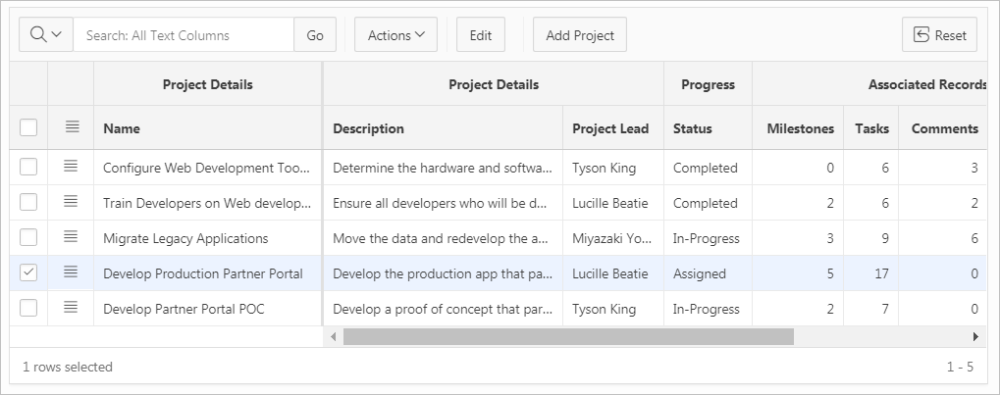
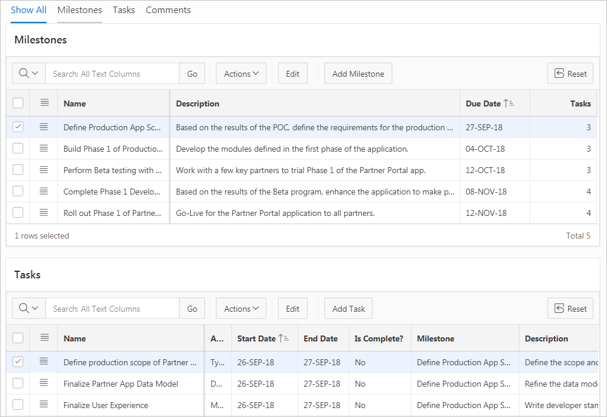

11.5 Creating Master Detail Forms
Developers can create a master detail form with either the Create Application Wizard or the Create Page Wizard.
- About Master Detail Forms
A master detail form enables users to query, insert, update, and delete values from two related tables or views. You choose the tables on which to build the master and detail regions. - Creating a Master Detail Form Using the Create Application Wizard
Run the Create Application Wizard to create a new application containing one or more pages. Supported master detail forms include Stacked and Side by Side. - Creating a Stacked Master Detail Using the Create Page Wizard
Run the Create Page Wizard to add a single page (or Stacked) master detail form that uses an local or external data source. - Creating a Side by Side Master Detail Using the Create Page Wizard
Run the Create Page Wizard to add a new page with a Side by Side master detail that uses a local or external data source. - Creating a Drill Down Master Detail Using the Create Page Wizard
Run the Create Page Wizard to add a two page Drill Down master detail that uses a local or external data source.
See Also:
"Creating Master Detail from an Existing Interactive Grid" and "Creating a Legacy Master Detail Form"
Parent topic: Developing Forms
11.5.1 About Master Detail Forms
A master detail form enables users to query, insert, update, and delete values from two related tables or views. You choose the tables on which to build the master and detail regions.
A master detail form reflects a one-to-many relationship between tables in a database. Typically, a master detail form displays a master row and multiple detail rows. When you create a master detail form using the Create Page or Create Application Wizards, you choose the tables on which to build the master form and the detail form. App Builder supports three types of master detail form options: Stacked; Drill Down; and Side by Side. While the Create Page Wizard supports all master detail form options, the Create Application Wizard supports only Stacked and Side by Side.
Tip:
To see master detail examples, install the sample application, Sample Master Detail and select a master detail type in the left navigation menu. See "安装生产力和示例应用."
Stacked Master Detail
A Stacked master detail form contains a single page with editable interactive grids based on two related tables or views. Users select a row in the master grid to update the detail grids. Developers can create a stacked master detail with either the Create Application Wizard or the Create Page Wizard.
The following example displays master detail interactive grids on the same page. The user has option of interacting with either the master or the detail without leaving the page.
Description of the illustration master_detail_single_1.png
The previous illustration shows the master interactive grid with the project, Develop Production Partner Portal selected. The next illustration shows detail interactive grids for Milestones and Tasks.
Description of the illustration master_detail_single_2.png
Drill Down Master Detail
A Drill Down master detail contains two pages based on two related tables or views. The first page contains an interactive report for the master table. The second page features a standard form for the master and interactive grids for the detail. Developers can create a Drill Down master detail with the Create Page Wizard.
In this example, users click the Edit icon to view project details. The second page includes both a standard form (for the master) and editable interactive grids.
For numeric and date fields, you can also pre-define date and number format masks, or apply those format masks after generating the initial form. Wizard generated master detail forms also automatically create validations for some columns. Validations are created for columns that are set to NOT NULL in the underlying table and columns of type NUMBER, DATE or TIMESTAMP. Note that validations are not created for columns if the column is set to read-only, either based on the user's selection, or defined user interface defaults.
Tip:
You can control the appearance of a specific column by editing column attributes.
Side by Side Master Detail
A Side by Side master detail form contains a single page master detail utilizing a side by side layout and report regions with modal edit windows. The left side contains a master list to navigate to the master record. The right side contains the selected master record and the associated detail report(s). Developers can create Side by Side master detail with either Create Application Wizard or Create Page Wizard.
The illustration that follows shows the Milestones detail interactive report. Users can Milestones by clicking an Edit icon.
Parent topic: Creating Master Detail Forms
11.5.2 Creating a Master Detail Form Using the Create Application Wizard
Run the Create Application Wizard to create a new application containing one or more pages. Supported master detail forms include Stacked and Side by Side.
Tip:
The Create Application Wizard uses general best practices to generate the application and does not include several advanced options included in the Create Page Wizard.
To create a master detail form using the Create Application Wizard:
See Also:
Parent topic: Creating Master Detail Forms
11.5.3 Creating a Stacked Master Detail Using the Create Page Wizard
Run the Create Page Wizard to add a single page (or Stacked) master detail form that uses an local or external data source.
A Stacked master detail form contains a single page with editable interactive grids based on two related tables or views. Users select a row in the master grid to update the detail grids.
- Creating a Stacked Master Detail Using a Local Database
- Creating a Stacked Master Detail Using External Data Sources
Parent topic: Creating Master Detail Forms
11.5.3.1 Creating a Stacked Master Detail Using a Local Database
To create a Stacked master detail on a new page using a local database:
11.5.3.2 Creating a Stacked Master Detail Using External Data Sources
The component(s) described in this topic include built-in support for REST Enabled SQL and Web Sources which enables read and write access to remote data sources. In order to build a component on a remote data source, you must first create the application and configure the external data source.
Tip:
To learn more about external data sources, see "Managing REST Enabled SQL References" and "Managing Web Source Modules."To create a single page master detail master detail on a new page using an external data source:
11.5.4 Creating a Side by Side Master Detail Using the Create Page Wizard
Run the Create Page Wizard to add a new page with a Side by Side master detail that uses a local or external data source.
A Side by Side master detail form contains a single page master detail utilizing a side by side layout and report regions with modal edit windows. The left side contains a master list to navigate to the master record. The right side contains the selected master record and the associated detail report(s).
- Creating a Side by Side Master Detail Using a Local Database
- Creating a Side by Side Master Detail Using External Data Sources
Parent topic: Creating Master Detail Forms
11.5.4.1 Creating a Side by Side Master Detail Using a Local Database
To create a Side by Side master detail on a new page using a local database:
- On the Workspace home page, click the App Builder icon.
- Select an application.
- Click Create Page.
- For Create a Page:
- On Create Page, select Side by Side.
- On Page Attributes:
- Starting Page Number - Enter an unused starting page number. This wizard will create multiple pages starting with the number specified. The default is the first available page number within this application.
- Master Detail Page Name - Enter the name of the master detail page which contains side by side master detail regions. The left side contains a master list to navigate to navigate to the master record. The right side contains the selected master record and the associated detail report.
- Breadcrumb - Select whether you want to use a breadcrumb navigation control on your page. If you elect to include breadcrumb navigation, additional attributes appear.
- Click Next.
- For Navigation Preference:
- Select how you want this page integrated into the Navigation Menu. To learn more, see field-level Help.
- Click Next.
- On the Master Detail Source, specify the following:
- Table/View Owner - Select the owner of the table on which you are building master detail page.
- Master Table - Select the master table or view.
- Primary Display Column - Select the column to display as primary column in the report to navigate to a different master record.
- Secondary Display Column - Select the column to display as secondary column in the report to navigate to a different master record.
- Detail Table - Select the detail table or view.
- Detail Table 2 - Select the detail table or view (optional).
- Detail Table 3 - Select the detail table or view (optional).
- Detail Table 4 - Select the detail table or view (optional).
- Click Create.
- To view the new master detail, click Save and Run Page.
The rendered pages appear.
11.5.4.2 Creating a Side by Side Master Detail Using External Data Sources
The component(s) described in this topic include built-in support for REST Enabled SQL and Web Sources which enables read and write access to remote data sources. In order to build a component on a remote data source, you must first create the application and configure the external data source.
Tip:
To learn more about external data sources, see "Managing REST Enabled SQL References" and "Managing Web Source Modules."To create a Side by Side master detail on a new page using an external data source:
11.5.5 Creating a Drill Down Master Detail Using the Create Page Wizard
Run the Create Page Wizard to add a two page Drill Down master detail that uses a local or external data source.
A Drill Down master detail contains two pages based on two related tables or views. The first page contains an interactive report for the master table. The second page features a standard form for the master and interactive grids for the detail.
- Creating a Drill Down Master Detail Using a Local Database
- Creating a Drill Down Master Using External Data Sources
Parent topic: Creating Master Detail Forms
11.5.5.1 Creating a Drill Down Master Detail Using a Local Database
To create a two page Drill Down master detail using a local dataase:
The rendered pages appear.
11.5.5.2 Creating a Drill Down Master Using External Data Sources
The component(s) described in this topic include built-in support for REST Enabled SQL and Web Sources which enables read and write access to remote data sources. In order to build a component on a remote data source, you must first create the application and configure the external data source.
Tip:
To learn more about external data sources, see "Managing REST Enabled SQL References" and "Managing Web Source Modules."To create a two page drill down master detail using an external data sources: